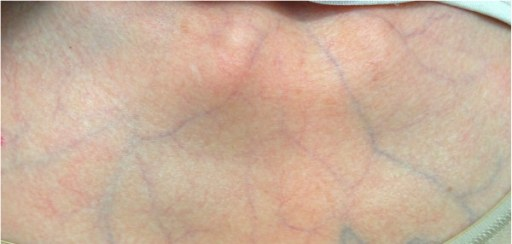

A clinical protocol for vascular EDS due to COL3A1 variants, covering the 2017 criteria, when to test, arterial and pregnancy risk, surveillance, emergency planning and family testing.
Protocole clinique du SED vasculaire lié à des variants COL3A1, couvrant les critères de 2017, les indications de test, les risques artériels et obstétricaux, la surveillance, la planification des urgences et le dépistage familial.
Vascular Ehlers-Danlos syndrome (vEDS) is a rare inherited condition caused by a change in the COL3A1 gene, which makes type III collagen. This collagen gives strength to arteries, the bowel and the uterus. In vEDS these tissues are fragile and can tear, sometimes without warning. Skin is often thin, with visible veins, and bruising is easy. Knowing the diagnosis matters: it guides emergency care, surgery, pregnancy planning and family testing.
Le syndrome d’Ehlers-Danlos vasculaire (SEDv) est une maladie héréditaire rare causée par une modification du gène COL3A1, qui produit le collagène de type III. Ce collagène donne leur solidité aux artères, à l’intestin et à l’utérus. Dans le SEDv, ces tissus sont fragiles et peuvent se rompre, parfois sans avertissement. La peau est souvent mince, avec des veines visibles, et les ecchymoses sont faciles. Connaître le diagnostic est important : il guide les soins d’urgence, la chirurgie, la planification d’une grossesse et le dépistage familial.
Vascular EDS is an autosomal dominant disorder caused by heterozygous pathogenic variants in COL3A1. It carries the highest risk of morbidity and early mortality among the EDS types, from arterial dissection or rupture, intestinal (especially sigmoid colon) perforation and uterine rupture in pregnancy. Glycine substitutions in the triple helix and splice-site variants are generally associated with a more severe course than null (haploinsufficiency) variants. Many probands present only after a first complication, and about half have a de novo variant (Byers 2017; GeneReviews).
Le SED vasculaire est une maladie autosomique dominante causée par des variants pathogènes hétérozygotes de COL3A1. C’est le type de SED associé au risque le plus élevé de morbidité et de mortalité précoce, par dissection ou rupture artérielle, perforation intestinale (surtout du côlon sigmoïde) et rupture utérine pendant la grossesse. Les substitutions de glycine dans la triple hélice et les variants d’épissage sont généralement associés à une évolution plus sévère que les variants nuls (haplo-insuffisance). Plusieurs cas index ne sont reconnus qu’après une première complication, et environ la moitié présente un variant de novo (Byers 2017; GeneReviews).
| 2017 criteria (Malfait 2017) | Features |
|---|---|
| Critères de 2017 (Malfait 2017) | Caractéristiques |
| Major | Family history of vEDS with a documented causative COL3A1 variant; arterial rupture at a young age; spontaneous sigmoid colon perforation without diverticular disease or other bowel pathology; uterine rupture in the third trimester without previous caesarean section or severe peripartum perineal tears; carotid–cavernous sinus fistula without trauma |
| Majeurs | Antécédent familial de SEDv avec variant COL3A1 causal documenté; rupture artérielle à un jeune âge; perforation spontanée du côlon sigmoïde sans diverticulose ni autre pathologie intestinale; rupture utérine au troisième trimestre sans césarienne antérieure ni déchirure périnéale sévère; fistule carotido-caverneuse sans traumatisme |
| Minor | Bruising unrelated to trauma or in unusual sites; thin, translucent skin with increased venous visibility; characteristic facial appearance; spontaneous pneumothorax; acrogeria; talipes equinovarus; congenital hip dislocation; hypermobility of small joints; tendon and muscle rupture; keratoconus; gingival recession and fragility; early-onset varicose veins |
| Mineurs | Ecchymoses sans traumatisme ou à des sites inhabituels; peau mince et translucide avec veines visibles; faciès caractéristique; pneumothorax spontané; acrogérie; pied bot varus équin; luxation congénitale de la hanche; hypermobilité des petites articulations; rupture tendineuse et musculaire; kératocône; récession et fragilité gingivales; varices précoces |
| When to test | A family history of vEDS, arterial rupture or dissection in a person under 40, unexplained sigmoid colon rupture, or spontaneous pneumothorax with other features of vEDS should prompt COL3A1 testing. The diagnosis requires a pathogenic COL3A1 variant. |
| Quand tester | Un antécédent familial de SEDv, une rupture ou dissection artérielle avant 40 ans, une rupture inexpliquée du côlon sigmoïde ou un pneumothorax spontané avec d’autres signes de SEDv doivent mener à un test de COL3A1. Le diagnostic exige un variant pathogène de COL3A1. |

vEDS is passed on in a dominant way: each child of a person with vEDS has a 1 in 2 chance of inheriting the gene change. About half of people with vEDS are the first in their family.
Le SEDv se transmet de façon dominante : chaque enfant d’une personne atteinte a une chance sur deux d’hériter de la modification génétique. Environ la moitié des personnes atteintes sont les premières de leur famille.
Variant type informs prognosis: glycine substitutions and splice-site/exon-skipping variants act in a dominant-negative way, whereas null variants causing haploinsufficiency tend to have later onset and fewer complications. Biallelic COL3A1 variants are rare. Interpret variants with an expert laboratory; a VUS should not be used to make or exclude the diagnosis.
Le type de variant éclaire le pronostic : les substitutions de glycine et les variants d’épissage/saut d’exon agissent de façon dominante négative, alors que les variants nuls (haplo-insuffisance) ont tendance à se manifester plus tard avec moins de complications. Les variants COL3A1 biallèliques sont rares. Interpréter les variants avec un laboratoire expert; un VSI ne doit pas servir à poser ni à exclure le diagnostic.
Care focuses on lowering the strain on arteries, planning ahead for emergencies, and avoiding procedures that could injure fragile tissues. Carry a medical alert card or bracelet and an emergency letter. Sudden severe pain in the chest, abdomen, back or head needs emergency assessment.
Les soins visent à réduire la contrainte sur les artères, à planifier les urgences et à éviter les interventions qui pourraient blesser des tissus fragiles. Ayez sur vous une carte ou un bracelet d’alerte médicale et une lettre d’urgence. Une douleur soudaine et intense à la poitrine, à l’abdomen, au dos ou à la tête exige une évaluation d’urgence.
These organizations offer reliable information and support. Your genetics team can also connect you with local specialists.
Ces organismes offrent de l’information fiable et du soutien. Votre équipe de génétique peut aussi vous orienter vers des spécialistes près de chez vous.
Related protocols: hEDS / HSD · Classical EDS · Vascular EDS · Kyphoscoliotic EDS.
Protocoles apparentés : SEDh / TSH · SED classique · SED vasculaire · SED cyphoscoliotique.